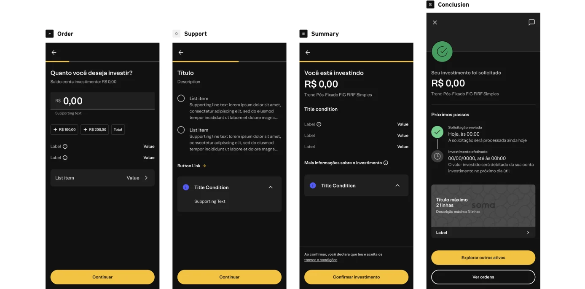

Critique sessions & Design system evolution
We worked closely with 6 business units to ensure alignment of expectations and completeness of deliverables
Although fast-paced, we made sure to run a robust discovery phase to achieve the best solution
I led the team in identifying product requirements across squads to design a scalable solution that standardized components and user interactions
We developed four mobile templates to standardize investment product negotiation flows and ensure consistent user experiences
We worked closely with 6 business units to ensure alignment of expectations and completeness of deliverables
Although fast-paced, we made sure to run a robust discovery phase to achieve the best solution

Teams are still finalizing template adoption, and the overall impact is expected to grow significantly soon
Several flows were simplified, cutting steps from 8 to 3, which directly impacted conversion rates